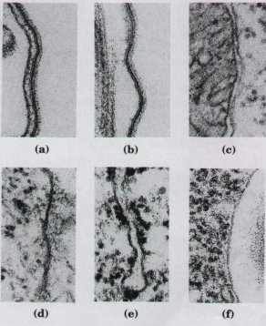
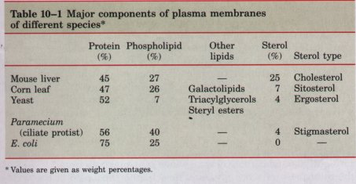
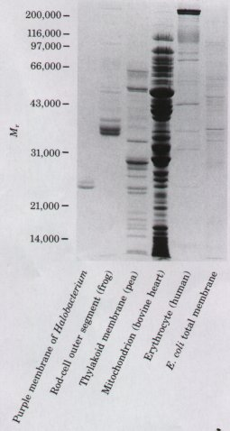
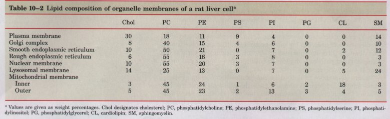
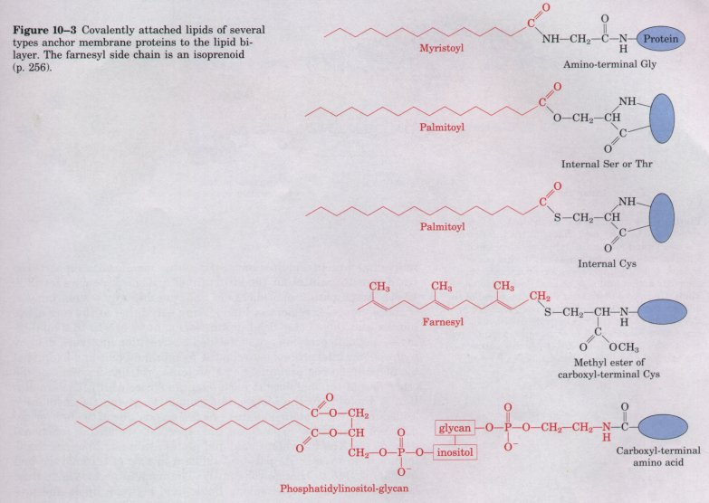

The first living cell probably came into being when a membrane formed, separating that cell's precious contents from the rest of the universe. Membranes defme the external boundary of cells and regulate the molecular traffic across that boundary; they divide the internal space into discrete compartments to segregate processes and components (Fig. 10-1); they organize complex reaction sequences; and they are central to both biological energy conservation and cell-to-cell communication. The biological activities of membranes flow from their remarkable physical properties. Membranes are tough but flexible, self sealing, and selectively permeable to polar solutes. Their flexibility permits the shape changes that accompany cell growth and movement (such as amoeboid movement). Their ability to seal over temporary breaks in their continuity allows two membranes to fuse, as in exocytosis, or a single membrane-enclosed compartment to undergo fission, yielding two sealed compartments, as in endocytosis or cell division, without creating gross leaks through the cell surface. Because membranes are selectively permeable, they retain certain compounds and ions within cells and within specific cellular compartments, and exclude others.
| Membranes are not merely passive
barriers. They include an array of proteins specialized
for promoting or catalyzing a variety of molecular
events. Pumps move specific organic solutes and inorganic
ions across the membrane against a concentration
gradient; energy transducers convert one form of energy
into another; receptors on the plasma membrane sense
extracellular signals, converting them into molecular
changes within the cell. Membranes are composed of just two layers of molecules, and are therefore very thin; they can be thought of as essentially two-dimensional. A large number of cellular processes are associated with membranes (such as the synthesis of lipids and certain proteins, and the energy transductions in mitochondria and chloroplasts). Because intermolecular collisions are far more probable in this two-dimensional space than in three-dimensional space, the efficiency of certain enzyme-catalyzed pathways organized within a two-dimensional membrane is vastly increased. In this chapter we first describe the composition of cellular membranes and their chemical architecture-the physical structure that underlies their biological functions. We then turn to membrane transport, the protein-mediated transmembrane passage of solutes. In later chapters we will discuss the role of membranes in energy transduction, lipid synthesis, signal transduction, and protein synthesis. |
 Figure 10-1 Viewed in cross section, all intracellular membranes share a characteristic trilaminar appearance. The protozoan Paramecium contains a variety of specialized membrane-bounded organelles. When a thin section of a Paramecium is stained with osmium tetroxide to highlight membranes, each of the membranes appears as a threelayer structure, 5 to 8 nm thick. The trilaminar images consist of two electron-dense layers on the inner and outer surfaces separated by a less dense central region. At left are high-magnification views of the membranes of (a) a cell body (plasma and alveolar membranes tightly apposed), (b) a cilium, (c) a mitochondrion, (d) a digestive vacuole, (e) the endoplasmic reticulum, and (f) a secretory vesicle. |
One approach to understanding membrane function is to study membrane composition-to determine, for example, which components are commonly present in membranes and which are unique to membranes with specific functions. Knowledge of composition is also invaluable in studies of membrane structure, as any viable model for membrane structure must conform to and explain the known composition. Before describing membrane structure and function, we therefore consider the molecular components of membranes.
Proteins and polar lipids account for almost all of the mass of biological membranes; the small amount of carbohydrate present is generally part of glycoproteins or glycolipids. The relative proportions of protein and lipid differ in different membranes (Table 10-1), reflecting the diversity of biological roles. The myelin sheath, which serves as a passive electrical insulator wrapped around certain neurons, consists primarily of lipids, but the membranes of bacteria, mitochondria, and chloroplasts, in which many enzyme-catalyzed metabolic processes take place, contain more protein than lipid.
For studies of membrane composition, it is essential first to isolate the membrane of interest. When eukaryotic cells are subjected to mechanical shear, their plasma membranes are torn and fragmented, releasing cytosolic components and membrane-bounded organelles: mitochondria, chloroplasts, lysosomes, nuclei, and others. The plasma membrane fragments and intact organelles can be isolated by centrifugal techniques described in Chapter 2 (see Fig. 2-24).
| Chemical analysis of membranes isolated from various sources reveals certain common properties. Membrane lipid composition is characteristic for each kingdom, each species, each tissue, and each organelle within a given cell type (Table 10-2 ). Cells clearly have mechanisms to control the kinds and amounts of membrane lipids synthesized and to target specific lipids to particular organelles. These distinct combinations doubtless confer advantages on cells and organisms during evolution, but in most cases the funetional significance of these characteristic lipid compositions remains to be discovered. |  |
The protein composition of membranes from different sources (Fig. 10-2) varies even more widely than their lipid composition, reflecting functional specialization. The outer segment of the rod cells of the vertebrate retina is highly specialized for the reception of light; more than 90% of its membrane protein is the light-absorbing protein rhodopsin (see Fig. 9-18). The less-specialized plasma membrane of the erythrocyte has about 20 prominent proteins as well as dozens of minor ones; many of these serve as transporters, each responsible for moving a specific solute across the membrane. The inner (plasma) membrane of E. coli contains hundreds of different proteins, various transporters, as well as many enzymes involved in energy-conserving metabolism, lipid synthesis, protein export, and cell division. The outer membrane of E. coli has a different function (protection) and a different set of proteins. Some membrane proteins have more or less complex arrays of covalently bound carbohydrates, which may make up from 1 to 70% of the total mass of these glycoproteins. In the rhodopsin of the vertebrate eye, a single hexasaccharide makes up 4%, of the mass; in glycophorin, a glycoprotein of the plasma membrane of erythrocytes, 60% of the mass consists of complex polysaccharide units covalently attached to specific amino acid residues. Ser, Thr, and Asn residues are often the points of attachment (see Fig. 11-23). In general, plasma membranes contain many glycoproteins, but intracellular membranes such as those of mitochondria and chloroplasts rarely contain covalently bound carbohydrates. The sugar moieties of surface glycoproteins influence the protein folding, transport to the cell surface, and receptor functions of these glycoproteins. |
 Figure 10-2 Membranes with specialized functions differ in protein composition, as revealed by electrophoretic separation on a polyacrylamide gel in the presence of the detergent SDS ( p. 1411. The purple membrane of' Halobacterium and the rod-cell outer segment membrane are very rich in bacteriorhodopsin and rhodopsin, respectively. The myelin sheath also contains relatively few kinds of proteins. The other membranes shown have more complex functions, reftected in a wider variety of membrane proteins. |

Certain membrane proteins are covalently attached to one or more lipids, which probably serve as hydrophobic anchors, holding the proteins to the membrane. The lipid moiety on some membrane proteins is a fatty acid, attached in amide or ester linkage; other proteins have a long-chain isoprenoid covalently attached, and others are joined through a complex polysaccharide (a glycan; see Chapter 11) to a molecule of phosphatidylinositol (Fig. 10-3).
